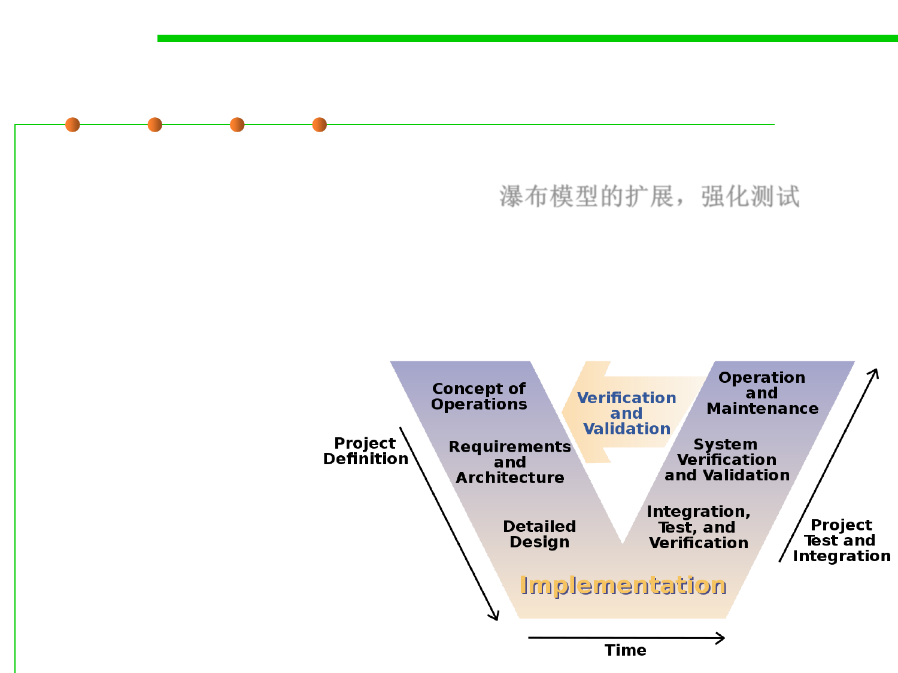

2.1 Software Lifecycle and Configuration Management
V-Model (for verification and validation)
▪ V-model represents a development process that may be considered
an extension of the waterfall model. 瀑布模型的扩展，强化测试
– Instead of moving down in a linear way, the process steps are bent
upwards after the coding phase, to form the typical V shape.
– Demonstrates the relationships between each phase of the development
life cycle and its associated phase of testing.
– The horizontal and
vertical axes represents
time or project
completeness
(left-to-right) and
level of abstraction
(coarsest-grain abstraction
uppermost), respectively.